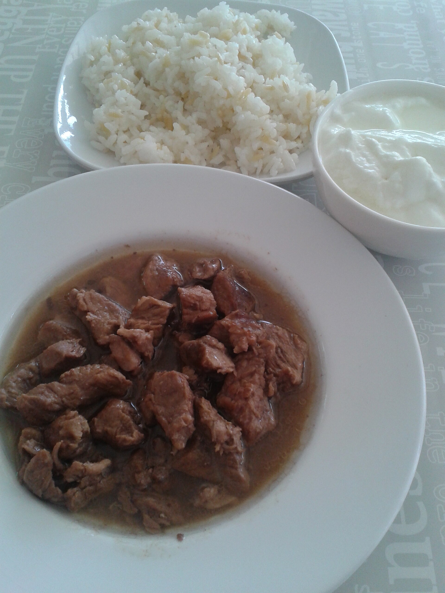

Draft only · noindex,nofollow · PL/EN · P1/P2 remediated
Jak czytać etykiety jogurtów
Lead PL: Jak czytać etykiety jogurtów: wybór jogurtu przez skład, cukry i porcję, a nie przez hasło na froncie opakowania. Ten szkic ma pomóc czytelnikowi podjąć kilka małych decyzji w zwykłym tygodniu, bez obietnic leczenia, bez straszenia i bez planu, którego nie da się utrzymać przy pracy, rodzinie albo podróży.

Najważniejsze wnioski
- Najpierw nazwij sytuację: wybór jogurtu bez demonizowania cukru i bez przepłacania za marketing wysokobiałkowy.
- Pierwszy krok to: porównaj dwa produkty tej samej wielkości i sprawdź kolejno skład, cukry w 100 g, białko oraz dodatki smakowe.
- W praktyce oprzyj posiłki o: jogurt naturalny, kefir, skyr lub jogurt owocowy z krótkim składem; owoce i płatki można dodać samodzielnie.
- Nie idź w skrót: pułapką jest porównywanie małego kubka z dużym opakowaniem albo traktowanie każdego cukru jak identycznego dodatku.
Szybka odpowiedź
Jak czytać etykiety jogurtów dotyczy przede wszystkim sytuacji: wybór jogurtu bez demonizowania cukru i bez przepłacania za marketing wysokobiałkowy. Najlepszy punkt wyjścia to zwykły tydzień, w którym da się powtórzyć podobne posiłki i zauważyć, co naprawdę pomaga. Artykuł nie ustawia jednej idealnej diety; porządkuje decyzje, które mają największą szansę być wykonane.
Od czego zacząć
Pierwszy krok: porównaj dwa produkty tej samej wielkości i sprawdź kolejno skład, cukry w 100 g, białko oraz dodatki smakowe. Dzięki temu zmiana jest mierzalna i nie zamienia się w chaotyczne usuwanie produktów. Jeśli po kilku dniach nie da się jej utrzymać, warto uprościć warunki, a nie dokładać kolejne zakazy.
Produkty, które pomagają w praktyce
W praktyce przydadzą się: jogurt naturalny, kefir, skyr lub jogurt owocowy z krótkim składem; owoce i płatki można dodać samodzielnie. Taki zestaw daje punkt zaczepienia w sklepie i w kuchni. Nie każdy element musi pojawić się codziennie; ważniejsze jest, żeby posiłek miał funkcję: sycić, ułatwiać regularność albo zmniejszać liczbę przypadkowych decyzji.
Jak uprościć decyzję
Przy zakupach warto wybrać dwie wersje: domową i awaryjną. Domowa może być tańsza i bardziej powtarzalna, awaryjna ma ratować dzień, kiedy plan się rozsypuje. Wtedy czytelnik nie musi wybierać między perfekcją a całkowitym porzuceniem nawyku.
Co zwykle psuje plan
Najważniejsza pułapka: pułapką jest porównywanie małego kubka z dużym opakowaniem albo traktowanie każdego cukru jak identycznego dodatku. To szczególnie istotne w treściach zdrowotnych, bo radykalna rada często brzmi atrakcyjnie, ale nie daje lepszego monitorowania objawów ani jakości diety. Lepiej zmienić jeden element i wiedzieć, co się sprawdza.
Test na 7 dni
zrób zdjęcie trzech etykiet, wybierz jedną stałą opcję do śniadania i jedną wygodną opcję na przekąskę. Do obserwacji wystarczą trzy sygnały: głód lub sytość, komfort trawienia oraz łatwość powtórzenia planu. Wyniki badań, masa ciała czy objawy przewlekłe wymagają dłuższego horyzontu niż jeden weekend.
Sygnały do konsultacji
przy alergii na białka mleka, nietolerancji laktozy lub chorobach jelit wybór nabiału warto dopasować indywidualnie. Ten tekst jest edukacyjny i nie zastępuje diagnozy, leczenia ani indywidualnej konsultacji z lekarzem lub dietetykiem.
FAQ
Od czego zacząć przy temacie: jak czytać etykiety jogurtów?
Zacznij od najprostszej obserwacji: porównaj dwa produkty tej samej wielkości i sprawdź kolejno skład, cukry w 100 g, białko oraz dodatki smakowe. Jedna zmiana daje lepszą informację niż pięć działań wprowadzonych jednocześnie.
Czy potrzebuję specjalnych produktów?
Zwykle nie. Najpierw wykorzystaj proste opcje: jogurt naturalny, kefir, skyr lub jogurt owocowy z krótkim składem; owoce i płatki można dodać samodzielnie. Produkty specjalistyczne mają sens dopiero wtedy, gdy rozwiązują konkretny problem, a nie tylko wyglądają zdrowiej.
Kiedy dieta nie wystarczy?
przy alergii na białka mleka, nietolerancji laktozy lub chorobach jelit wybór nabiału warto dopasować indywidualnie. W takich sytuacjach dieta może być wsparciem, ale nie powinna opóźniać diagnostyki ani leczenia.
Nota bezpieczeństwa
Artykuł ma charakter edukacyjny i nie zastępuje diagnozy, leczenia ani indywidualnej konsultacji medycznej lub dietetycznej. przy alergii na białka mleka, nietolerancji laktozy lub chorobach jelit wybór nabiału warto dopasować indywidualnie
How to read yoghurt labels
Lead EN: How to read yoghurt labels: choosing yoghurt by ingredients, sugars and portion size rather than the front-of-pack slogan. This draft helps the reader make a few small decisions in an ordinary week, without treatment promises, scare tactics or a plan that collapses around work, family or travel.
Key takeaways
- Start by naming the situation: wybór jogurtu bez demonizowania cukru i bez przepłacania za marketing wysokobiałkowy.
- The first step is to compare two products of the same size and check ingredients, sugars per 100 g, protein and flavour additions.
- In practice, build around: plain yoghurt, kefir, skyr or fruit yoghurt with a short ingredient list; fruit and oats can be added separately.
- Avoid the shortcut that the trap is comparing a small cup with a large tub or treating every gram of sugar as identical added sugar.
Quick answer
How to read yoghurt labels is mainly about this situation: wybór jogurtu bez demonizowania cukru i bez przepłacania za marketing wysokobiałkowy. The best starting point is an ordinary week in which similar meals can be repeated and patterns can be noticed. The article does not prescribe one perfect diet; it organises the decisions most likely to be carried out.
Where to start
The first step is to compare two products of the same size and check ingredients, sugars per 100 g, protein and flavour additions. This makes the change measurable and prevents chaotic food removal. If it cannot be maintained after a few days, simplify the conditions rather than adding more rules.
Foods that help in practice
Practical options include: plain yoghurt, kefir, skyr or fruit yoghurt with a short ingredient list; fruit and oats can be added separately. This gives the reader a shopping and cooking anchor. Not every element must appear daily; what matters is the job of the meal: fullness, rhythm or fewer random decisions.
How to simplify the decision
For shopping, it helps to choose two versions: a home version and a backup version. The home version can be cheaper and more repeatable; the backup version saves the day when the plan falls apart. This avoids an all-or-nothing choice between perfection and abandoning the habit.
What usually breaks the plan
The key trap is that the trap is comparing a small cup with a large tub or treating every gram of sugar as identical added sugar. This matters in health content because radical advice often sounds attractive but does not improve symptom tracking or diet quality. Changing one element gives clearer feedback.
A 7-day test
photograph three labels, choose one steady breakfast option and one convenient snack option. Three signals are enough to monitor: hunger or fullness, digestive comfort and whether the plan can be repeated. Lab results, body weight and chronic symptoms need a longer horizon than one weekend.
Signals to seek support
with milk-protein allergy, lactose intolerance or bowel disease, dairy choices should be individualised. This article is educational and does not replace diagnosis, treatment or an individual consultation with a doctor or dietitian.
FAQ
Where should I start with jak czytać etykiety jogurtów?
Start with the simplest observation: compare two products of the same size and check ingredients, sugars per 100 g, protein and flavour additions. One change gives clearer feedback than five actions introduced at the same time.
Do I need special products?
Usually not. Start with simple options: plain yoghurt, kefir, skyr or fruit yoghurt with a short ingredient list; fruit and oats can be added separately. Specialist products make sense only when they solve a specific problem, not just because they look healthier.
When is diet not enough?
with milk-protein allergy, lactose intolerance or bowel disease, dairy choices should be individualised. In such situations, diet can support care but should not delay diagnosis or treatment.
Safety note
This article is educational and does not replace diagnosis, treatment or individual medical or nutrition advice. with milk-protein allergy, lactose intolerance or bowel disease, dairy choices should be individualised